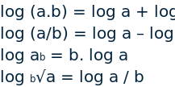

Introducción
En la vida real, las matemáticas nos conducen a aprender e interpretar los eventos o sucesos en los cuales están involucradas las personas, las cosas y las palabras. Por ello, las matemáticas se basan en métodos como la lógica y la inferencia, que contribuyen a la organización de las ideas que se forman en el pensamiento, para después estructurar conceptos fundamentales que se pueden aplicar en la vida cotidiana. Estudiar las relaciones entre los objetos y los enunciados (preposiciones), nos conducen a obtener todo tipo de conclusiones acerca de ellos. Igualmente a entender que dichos elementos u objetos con los que nos tropezamos en la cotidianidad se puede agrupar en conjuntos de los cuales podemos obtener información a través de las operaciones que se pueden hacer con ellos.
1. Lógica
La lógica es una disciplina que proporciona técnicas de razonamiento para la resolución de problemas de la vida cotidiana y para ello utilizamos las proposiciones, los conectores lógicos y los valores de verdad.
1.1 Proposiciones
Una proposición es un enunciado que tiene la propiedad de ser verdadero o falso, pero no ambos simultáneamente. La representación de las proposiciones se hace mediante letras minúsculas: p, q, r, s, t,….etc.
Veamos el siguiente ejemplo:
| Representación simbólica | Proposición | Valor de la proposición |
|---|---|---|
| p: | El trapecio tiene todos los lados iguales | F (falsa) |
| q: | Gabriel García Márquez escribió el libro cien años de soledad | V (verdadera) |
| r: | -8+2=5 | F (falsa) |
| s: | Colombia tiene 32 departamentos | V (verdadera) |
| t: | El Dr. Cárdenas es médico especialista | V o F (según sea verdadea o falsa) |
| u: | Hoy es lunes | V o F (según sea verdadea o falsa) |
Tabla 1. Proporciones
Como se observa en la Tabla 1, la proposición está antecedida de una letra en minúscula que la representa y enseguida por el valor que esta puede tomar: V o F, según sea verdadera o falsa.
Ahora veamos algunos ejemplos que no representan proposiciones:
- ¿Qué hora es?: los signos de interrogación determinan que es una pregunta y no un enunciado.
- Prohibido el paso: la frase indica que este enunciado es una advertencia.
- ¡Auxilio!: este enunciado es una exclamación.
- Buenos días: es un enunciado que indica saludo.
- Ella es una estudiante de ciencias: es un enunciado que se puede calificar como verdadero o falso, porque no se conoce quien es “ella”.
- 5x + 1 = 2: x puede tomar muchos valores para que se cumpla la igualdad.
1.2 Tipos de proposiciones
La proposiciones pueden ser de dos tipos: simples o compuestas.
Las proposiciones simples son aquellas que constan de un enunciado que une a un sujeto con un objeto mediante el verbo “es”.
Por ejemplo:
- El médico es especialista.
- El lapicero es azul.
- Los números pares son primos.
- El perro es dálmata.
- La tierra es redonda.
Las proposiciones compuestas constan de un enunciado en el que la relación sujeto – objeto esta mediada por un tipo de conector que puede ser de oposición (o, ni), negación (no), adición (y, e) o condición (si). Es decir, estas proposiciones pueden cumplirse solo cuando otra cosa suceda, o podrá cumplirse tanto para esa como para otra, o podrá cumplirse solo para una de todos. El enunciado consta de dos proposiciones simples.
Por ejemplo:
- Puedo manejar un automóvil si es automático.
- La raíz cuadrada de 16 es 4 o -4.
- Mi amiga es laboratorista dental y odontóloga.
- Un color de estos no es rojo.
- El se dedica a la natación o al tenis.
- El vestido no es claro ni es oscuro.
1.3 Conectores lógicos
Los conectores lógicos son expresiones que permiten formar proposiciones compuestas, en la Tabla 2, se observan los conectores lógicos que se utilizan en las proposiciones compuestas.
Tabla 2. Conectores
Ejemplo 1
Escritura simbólica o formalización de la proposición: p ˄ q, es una fórmula organizada con un signo de agrupación de las dos proposiciones simples.
Ejemplo 2
Escritura simbólica: ~p ˅ q
1.4 Valores de verdad
En una proposición compuesta, el valor de verdad dependerá de la veracidad de sus proposiciones simples, para ello observemos las tablas de verdad cuando se utiliza el operador “˄” (y) llamado conjunción y el operador “˅” (o), llamado disyunción.
En la siguiente tabla, correspondiente a la conjunción, el conector “˄” implica la idea de “ambos” y será verdadera únicamente cuando las dos proposiciones que la componen sean verdaderas.
Tabla 3. Tabla de verdad de la conjución
En la siguiente tabla, correspondiente a la disyunción, el conector “˅” implica la idea de “esto” o “aquello” y será falsa sólo si las dos proposiciones son falsas de manera simultánea.
Tabla 4. Tabla de verdad de la disyunción
Ejemplo: Dadas las siguientes proposiciones determinar el valor de verdad:
a. p ˅ q: 23 es múltiplo de 5 o 17 es número primo; de acuerdo con la tabla 4: la primera proposición es falsa (F) porque 23 no es múltiplo de 5, la segunda proposición es verdadera (V) porque 17 si es un número primo dado que es divisible por si mismo y por la unidad. Como una de las dos proposiciones es verdadera la proposición es verdadera (V).
b. p ˄ q: 23 es múltiplo de 5 y 17 es número primo; de acuerdo con la tabla 3: la primera proposición es falsa (F) porque 23 no es múltiplo de 5, la segunda proposición es verdadera (V) porque 17 si es un número primo dado que es divisible por si mismo y por la unidad. Para la conjunción una proposición F y una V, da como resultado que la proposición es falsa (F).
Las tablas de verdad cuando se utiliza la condicionalidad y la bicondicionalidad se observan a continuación:
En la siguiente tabla, correspondiente a la condicionalidad, el conector “→” implica que hay un antecedente al conector, que en este caso es p y un consecuente que es q. Cuando el antecedente es verdadero (V) y el consecuente es falso (F), la proposición es falsa (F).
Tabla 5. Tabla de verdad condicional
En la siguiente tabla, correspondiente a la bicondicionalidad, el conector “↔” implica que p → q y q → p y se escribe como p ↔ q, se lee p es condición necesaria para que q. La proposición es verdadera si ambas proposiciones p y q son verdaderas y falsa si ambas son falsas.
Tabla 6. Tabla de verdad bicondicional
Ejemplo: Dadas las siguientes proposiciones determinar el valor de verdad:
c. p → q: Si pasaste el semestre entonces podrás ir de viaje; de acuerdo con la tabla 5: si la primera proposición es verdadera (V) entonces la segunda proposición es verdadera (V) porque el sujeto podrá viajar. Como una de las dos proposiciones es verdadera la proposición es verdadera (V).
d. p ↔ q: Podrás viajar si y solo si pasaste el semestre; de acuerdo con la tabla correspondiente a la bicondicionalidad: la primera proposición se cumple, si se cumple la segunda, en este caso si la primera es verdadera (V), la segunda será verdadera (V) y la proposición completa es verdadera (V).
A continuación, se observa la tabla de verdad de la negación:
Tabla 7. Tabla de verdad bicondicional
En la tabla anterior, correspondiente a la negación, el conector “~” se aplica a un solo valor de verdad y la respuesta será el valor contrario a la proposición inicial.
Ejemplo:
p: La tierra es redonda.
~ p: La tierra no es redonda.

2. Teoría de conjuntos
La teoría de conjuntos estudia las propiedades y operaciones de los conjuntos, observe el recurso Teoría de conjuntos haciendo clic en la imagen.
Aplicación de las operaciones de conjuntos
En la vida cotidiana todo el tiempo estamos aplicando conjuntos; cuando se forman grupos, se clasifican y también cuando se realizan operaciones con ellos; veamos un claro ejemplo de cómo utilizamos los conjuntos en nuestra vida cotidiana en el siguiente video:
Material complementario. Veamos un claro ejemplo de cómo utilizamos los conjuntos en nuestra vida cotidiana
3. Potenciación, radicación y logaritmación
3.1 Potenciación
La potenciación es una operación matemática mediante la cual multiplicamos un número por si mismo cuantas veces nos indique el exponente:
En la figura se observa que se cumple la condición de multiplicar por sí misma la base “A” en lo indica el exponente “3”. Esto quiere decir que la potencia es una forma abreviada de escribir un producto formado por varios factores iguales: A x A x A.
Leyes de los exponentes
Primera ley: la multiplicación de dos cantidades de la misma base, es igual a la misma base y a la suma de sus exponentes:
am.an = am+n
Ejemplo:
22.23 = 22+3 = 25 = 2.2.2.2.2 = 32
Segunda ley: la división de dos cantidades de la misma base, es igual a tomar la misma base y restar los exponentes.
Ejemplo:
Tercera ley: si la multiplicación de dos o mas cantidades cualesquiera está elevada a la misma potencia, todos los factores toman el mismo exponente:
(a.b)n = an.bn
Ejemplo:
(2.3)3 = 23.33
Cuarta ley: si la división de dos cantidades esta elevada a la misma potencia, tanto el numerador como el denominador quedan elevados a las misma potencia:
Ejemplo:
Quinta ley: si una expresión exponencial se eleva a una potencia, se toma la misma base y se multiplican los exponentes:
(am)n = (a)m.n
Ejemplo:
(32)4 = (3)2.4 = 38
Sexta ley: toda expresión con exponente negativo, es igual a su recíproco:
Ejemplo:
Séptima ley: toda cantidad elevada a la potencia cero, es igual a 1.
b0= 1
Ejemplo:
(1.000.000.000)0= 1
Octava ley: un número elevado a una potencia fraccionaria, es igual a la raíz de ese número:
Ejemplo:
Manejo de los Signos en las Potencias
En la Tabla 10, se observa que en las potencias se cumple la ley algebraica de los signos:
- ( + ) . ( - ) = ( - )
- ( + ) . ( + ) = ( + )
- ( - ) . ( - ) = ( + )
| Base | Exponente | Potencia | Ejemplo |
|---|---|---|---|
| Positiva ( + ) | Par | ( + ) | 42 = 16 |
| Positiva ( + ) | Impar | ( - ) | 43 = 64 |
| Negativa ( - ) | Par | ( + ) | -(4)2 = (-4).(-4) = 16 |
| Negativa ( - ) | Impar | ( - ) | -(4)3 = (-4).(-4).(-4) = -64 |
Tabla 10. Manejo de signos en las potencias
3.2 Radicación
La radicación es el proceso para hallar raices de un número a. Es otra forma de expresar una potencia, por ello las propiedades de la potenciación se cumplen también en la radicación.
Lo anterior quiere decir que las leyes de los exponentes también se aplican a los radicales, veamos algunos ejemplos que nos presenta Aguilar (2015), pp.92.
Veamos ejemplos que aplican las anteriores leyes:
3.3 Logartimación
Un logaritmo es el exponente al que hay que elevar un número positivo para que de como resultado una cantidad determinada. Al igual que la radicación se relaciona con la potenciación, veamos:
Como se observa en la figura anterior logaritmo es el exponente (b) al cual hay que elevar la base (a) para obtener dicho número (c) y actúan como tales, siguiendo las mismas leyes de los exponentes enunciadas anteriormente, por ejemplo:
Los logaritmos se emplean para simplificar cálculos, representar números que son muy grandes o muy pequeños.
Los logaritmos aparecieron para facilitar la solución de problemas de aritmética y geometría, sustituyendo la multiplicación por la adición y la división por la sustracción.
Glosario
Conjunto:colección de objetos o elemntos diferenciables entre sí.
Ilación:enlace razonable y ordenado de las partes de un discurso o de una deducción lógica.
Proposición:enunciado que tiene la propiedad de ser verdadero o falso, pero no ambos simultáneamente.
Logaritmación:es el exponente al que hay que elevar un número positivo para que de como resultado una cantidad determinada.
Potenciación:operación matemática mediante la cual se multiplica un número por si mismo cuantas veces indique el exponente.
Radicación:proceso para hallar raices de un número a.
Referencias bibliográficas
Aguilar, A. (2015). Matemáticas simplificadas. (4a. ed.) Pearson Educación.http://www.ebooks7-24.com.bdigital.sena.edu.co/?il=4829
Curo, A. (2015). Matemática básica para administradores. Pp. 13 – 21. (2a. ed.) Ediciones de la U.http://www.ebooks7-24.com.bdigital.sena.edu.co/?il=6412
Ibáñez, P. (2018). Matemáticas I. Cengage. Pp. 151-157.http://www.ebooks7-24.com.bdigital.sena.edu.co/?il=8213